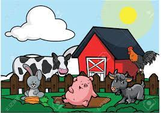
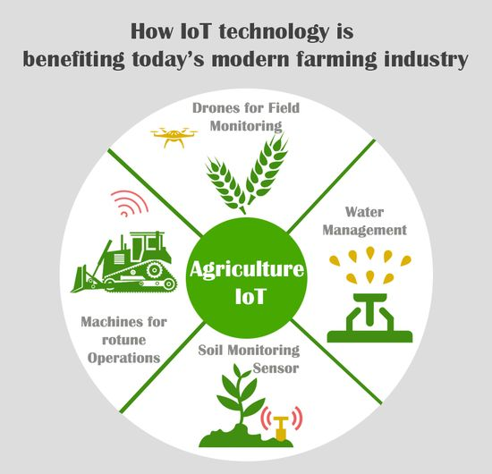

Farming Techniques
Learn about various farming techniques and best practices.
- Organic farming
- Hydroponics
- Permaculture
- Intensive farming
- Vertical farming


Crop Management
Explore crop management techniques for better yields.
- Soil preparation
- Planting and sowing
- Irrigation methods
- Pest and disease control
- Fertilizer application
Animal husbandary
Discover information about raising livestock.
- Cattle farming
- Poultry farming
- Sheep and goat farming
- Pig farming
- Fish farming


Agri-Tech
Stay updated on the latest agricultural technologies.
- Smart farming
- Drones in agriculture
- Precision agriculture
- Robotics in farming
- IoT applications in agriculture